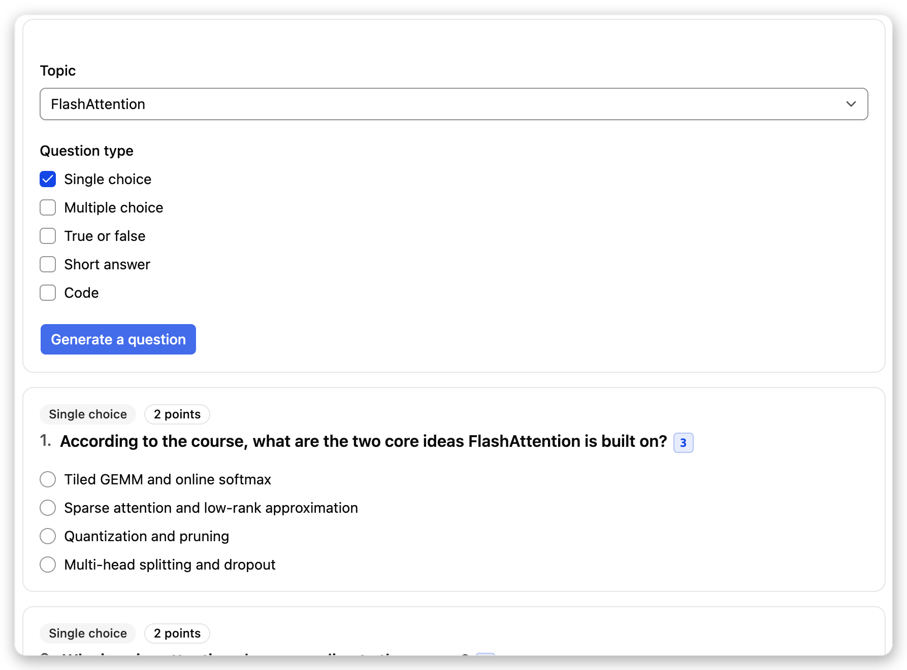

07 / FUNCTIONS / RAG OFFLINE
08 / 20
Build the evidence base on TACC.
01 / PDFs
16 documents
02 / TACC OCR
PaddleOCR-VL
03 / Chunks
page-first · 450 tokens
04 / BGE-M3
612 vectors
16
documents
593
pages
612
chunks + vectors
16
summaries

The index never runs at request time.
14 / DEMO / PRACTICE & POLICY
15 / 20
Practice, then check.
PRACTICE

POLICY

A complete solution is blocked before the deadline. The refusal offers concepts, a similar example, or a hint.
16 / FAILURE & LIMITS
17 / 20
Tutorials are the hard slice.
nDCG@5 · 51 questions
Concept
0.912
Assignment
0.909
Mechanism
0.875
Tutorial
0.617
Root cause
Tutorial pages bundle sub-tasks.
Lesson
hit@5 0.941; nDCG interval crosses zero; 2.7× cost.
Limits
Citations persisted
TACC execution
One course
Instructor/TA console partial